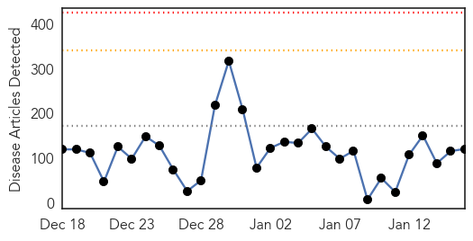
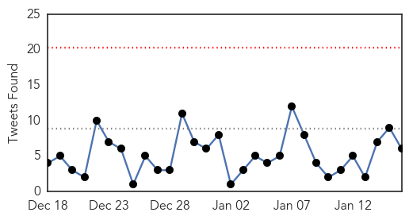
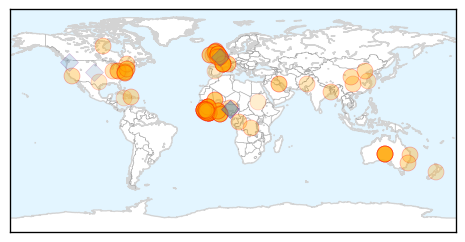

Ebola
30-Day Web Trend
0 alerts, 0 warnings

30-Day Twitter Trend
0 alerts, 0 warnings

Article Locations
Article Confidences
Top Articles:
- 1.000
- Red Cross Nurse Dies In Sierra Leone
- 1.000
- Schools in Guinea closed amid Ebola to reopen Monday
- 1.000
- All schools in Guinea that were closed amid Ebola to reopen on Monday
- 1.000
- Suspected UK Ebola case: Patient rushed to hospital after returning from West Africa 'tests negative for deadly virus'
- 1.000
- 8 from Ebola-affected countries quarantined, 7 released – Health Ministry
- 1.000
- Guinea to Reopen Schools as Ebola Cases Decline
- 1.000
- All schools in Guinea that were closed amid Ebola to reopen on Monday
- 1.000
- where we are now and what happens next
- 1.000
- Schools in Guinea closed amid Ebola to reopen Monday
- 1.000
- Chance of Ebola outbreak ending
- 0.999
- Guinea, Sierra Leone aim to be Ebola-free by mid-2015
- 0.999
- Ebola spread slowing
- 0.999
- Ebola fear nurse transferred to UK (From Wiltshire Business Online)
- 0.999
- Ebola outbreak in West Africa appears to be slowing down -U.N.
- 0.999
- Australian nurse evacuated from Sierra Leone after Ebola scare
- 0.999
- Australian nurse evacuated from Sierra Leone after Ebola scare
- 0.999
- Edinburgh hospital woman tests negative for Ebola
- 0.999
- Aussie Ebola nurse rushed to UK after battling deadly disease in Sierra Leone
- 0.999
- Ebola appears to be slowing down - UN - Africa
- 0.999
- UN Ebola czar says epidemic has 'passed the tipping point'
- 0.999
- Australian nurse treating Ebola patients in Sierra Leone airlifted to UK
- 0.999
- MetroHealth designated as Ebola treatment center; only site in Ohio, one of 49 in U.S.
- 0.999
- WHO Ebola emergency committee to meet next week
- 0.999
- Ebola outbreak in West Africa appears to be slowing down, says UN
- 0.999
- Edinburgh patient tests 'negative' for Ebola
- 0.999
- Two Healthcare Workers Transported to UK on Suspicion of Ebola Virus
- 0.999
- Ebola outbreak in West Africa slowing down: UN - '21,200 infected in worst outbreak since March' - Kuwait Times
- 0.998
- Australian nurse evacuated from Sierra Leone after Ebola scare
- 0.998
- Australian Ebola fears nurse airlifted to Britain
- 0.998
- Australian nurse evacuated from Sierra Leone
- 0.998
- Schools in Guinea closed during Ebola outbreak to reopen Monday
- 0.998
- Communicating in a crisis
- 0.998
- Ebola outbreak in West Africa slowing down
- 0.998
- Ebola outbreak in West Africa appears to be slowing down
- 0.998
- Ebola spread slowing in hard-hit countries: WHO
- 0.998
- Ebola – end in sight as crisis passes 'tipping point', says UN virus 'czar'
- 0.998
- Ebola Outbreak in West Africa Slowing Down – UN
- 0.998
- Doctors Without Borders Fighting Malaria and Ebola
- 0.998
- Suspected Ebola victim tests negative for disease in Edinburgh
- 0.998
- Ebola outbreak in West Africa appears to be slowing down: U.N.
- 0.997
- J&J Gets $115M to Push Out Ebola Vaccine Faster
- 0.997
- Ebola Outbreak Points to Tragic Flaws in World's Disease Resilience
- 0.997
- Support affected countries to control Ebola – Health Minister
- 0.997
- Can EHRs power up the fight against epidemics? -- GCN
- 0.996
- Volunteer who had potential contact with Ebola in Sierra Leone being treated at East Surrey Hospital
- 0.996
- Optimism as Ebola outbreak declines:Friday 16 January 2015
- 0.995
- Chembio hopes for speedy trial of rapid Ebola test
- 0.994
- UN: At least 50 Ebola hotspots remain
- 0.994
- UN: At Least 50 Ebola Hotspots Remain, But New Cases Falling
- 0.993
- Social clustering influenced spread of Ebola virus in West Africa
Showing top 50 articles...
Top Tweets:
- 0.917
- Sad to be leaving Liberia today, but happy that Ebola cases have plummeted. Back in West Africa in 3-4 weeks to continue treatment trials.
- 0.882
- RT: Ebola in Liberia: Ministry of Health besieged http://t.co/Jyd89kawSl
- 0.848
- EbolaNews: @RedCross says nurse has died of Ebola in Sierra Leone becoming the org's first staff member to die there http://t.co/fTCrVthmQS
- 0.782
- WHO | Ebola response roadmap - Situation report http://t.co/b2x1lirqn7
- 0.674
- UN: At Least 50 Ebola Hotspots, but New Cases Are Declining http://t.co/0h9l0wi55D
- 0.589
- Capacity is in place to hunt the virus, instead of being hunted by the virus - Bruce Aylward. EbolaResponse http://t.co/jxSqsiHgtn
- 0.580
- First Ebola clinic for pregnant women opens in Sierra Leone. http://t.co/zK6tu4fShg via
- 0.540
- LVH-Muhlenberg to accept Ebola patients http://t.co/ABK3Ys9vxL
- 0.520
- RT: New Ebola cases in SierraLeone, Liberia and Guinea are declining, says http://t.co/MsjJ1zhSbl via
Influenza
30-Day Web Trend
1 alerts, 0 warnings

30-Day Twitter Trend
0 alerts, 0 warnings

Article Locations

Article Confidences

Top Articles:
- 1.000
- Oklahoma Flu Deaths Rise By Nine
- 0.999
- Officials: 85 deaths this flu season, higher than 10-year total
- 0.999
- Flu vaccine being developed for all influenza types
- 0.998
- State health officials advise getting flu shot
- 0.998
- Flu Season Hitting Napa, Bay Area
- 0.998
- Napa is approaching height of flu season
- 0.997
- Protect yourself from the flu
- 0.997
- 19 more children die as flu season takes toll
- 0.997
- Update: DPH: Flu Deaths Rise to 16 in Delaware
- 0.997
- Flu shot 23 percent effective this season
- 0.996
- Two Flu-Related Deaths Reported At Children’s Mercy Hospital
- 0.994
- Flu vaccine not working well; only 23 percent effective
- 0.993
- Untitled Article
- 0.993
- Eight flu-related deaths reported in St. Joseph County as offici
- 0.993
- As flu season gets underway, US health authorities caution that flu shot is only 23 percent effective
- 0.993
- Flu Threat Expected to Continue
- 0.992
- Flu surge detected in Toronto
- 0.986
- Commentary: Fight flu by staying home
- 0.986
- Flu Shots Ineffective, Over 75 Percent Of Vaccines Will Not Work Due To Viral Mutations
- 0.984
- Flu Cases Up in NYC Amid Reports of Ineffective Vaccine
- 0.984
- Bay Area Sees Spike In Flu Cases, 4 Deaths Reported « CBS San Francisco
- 0.983
- Cracking the vaccine conundrum
- 0.981
- Flu shot effectiveness is lower while number of Hoosiers dying from flu increases
- 0.979
- Fighting Flu: When You Should Go to the Hospital
- 0.978
- Changing flu strain swarms the nation and relief can’t come fast enough
- 0.970
- Santa Cruz County fighting off flu; shots available
- 0.968
- CDC: This year's flu vaccine provides only minimal protection fr
- 0.967
- In Minnesota, number of flu cases suggests season has peaked
- 0.964
- Employee Influenza Vaccination Clinic at BU Occupational Health Center
- 0.952
- Bird flu in Oregon poses no danger to humans, but backyard chickens beware
- 0.950
- More than three-quarters of this year's flu shots were ineffective
- 0.950
- CDC: Flu vaccine only 23 percent effective
- 0.948
- 26-year-old newlywed dies from flu, sepsis complications
- 0.945
- Mac researchers may have found a way to outsmart the flu virus
- 0.943
- Organizations team up to fight the spread of flu at Sundance Film Festival
- 0.931
- Flu vaccine this season one of least effective in years, CDC says
- 0.910
- Wisconsin newlywed dies less than week after contracting flu
- 0.871
- Fighting the flu on northern reserves
- 0.793
- South Korea to Impose Poultry Movement Ban
- 0.705
- Eastern Iowa Breaking News, Weather, Closings
- 0.700
- WCCT Global collaborates with NIAID for Influenza Challenge Research
- 0.598
- Three snowmobiles, equipment stolen from Perry home
Top Tweets:
-
No tweets found for Jan 16, 2015